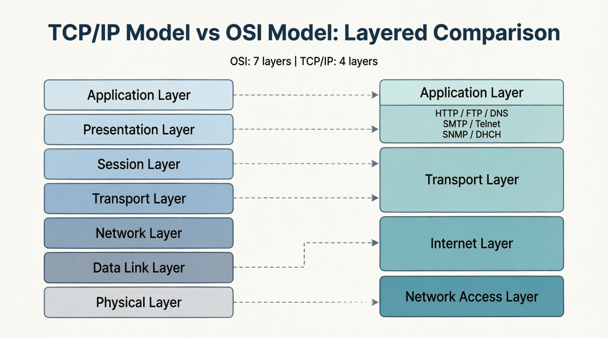

TCP/IP Model
The 4 Layers of Internet Communication
The 4 Layers of Internet Communication

TCP/IP is the communication model used on the Internet. It consists of 4 layers that manage how data is sent and received.
TCP/IP layers correspond to OSI layers: